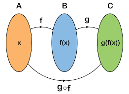

Composta de Funções
A composição de funções é uma operação matemática que envolve a combinação de duas ou mais funções para formar uma nova função. A ideia por trás da composição de funções é usar o resultado de uma função como entrada para outra função, criando assim uma relação mais complexa entre os elementos do domínio original e os elementos da imagem final. Vamos entender como funciona essa operação:
Suponha que você tenha duas funções, f e g, onde a função f mapeia elementos do conjunto A para o conjunto B, e a função g mapeia elementos do conjunto B para o conjunto C. A composição das funções f e g é denotada como "g o" f e é lida como "g composta com f".
A expressão g o f representa uma nova função que primeiro aplica a função f aos elementos do domínio, e então aplica a funçãog aos resultados obtidos de f. Em outras palavras:
(g o f)(x) = g(f(x))
Isso significa que você começa com um valor x, aplica a função f a ele, obtendo f(x), e depois aplica a função g a f(x) para obter o resultado final.
É importante notar que nem todas as combinações de funções são possíveis ou fazem sentido. A composição de funções só é possível quando o conjunto de valores de saída da primeira função f coincide com o conjunto de valores de entrada da segunda função g.
A ordem das funções na composição importa. Geralmente, g o f não é o mesmo que f o g, a menos que ambas as funções sejam bijetoras e tenham propriedades especiais que permitam a comutatividade.
